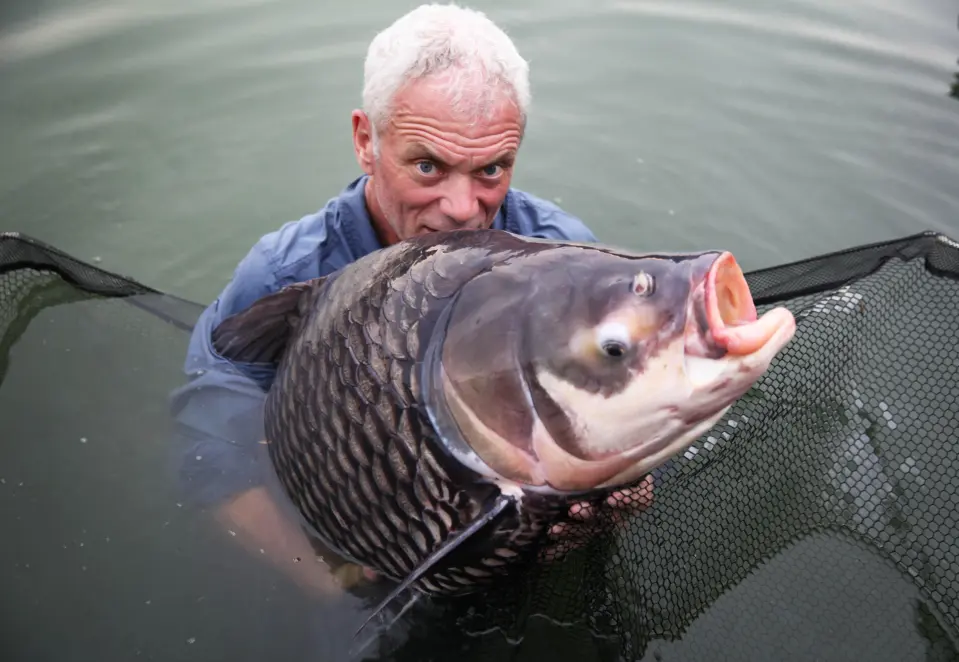
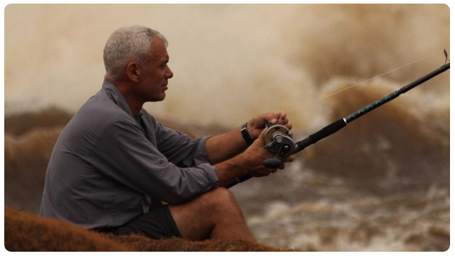

Introducere
Pescuitul este activitatea de a prinde pești sau alte viețuitoare acvatice folosind unelte specifice, având scopuri variate: hrănire, recreere (pescuit sportiv), ornamentare sau comercial/științific, fiind o metodă de extracție a resurselor din mediul acvatic, reglementată de legislație, ce poate fi o pasiune relaxantă ce conectează omul cu natura.
Site-ul prezintă principalele tehnici de pescuit, speciile de pești, echipamentele necesare pentru practicarea acestui hobby, o parte din legislatia in vigoare si un formular de contact. Acest site are scopul de a promova protejarea naturii si a resurselor acvatice prin pescuit responsabil, dar si de a incuraja practicarea acestui sport.
 